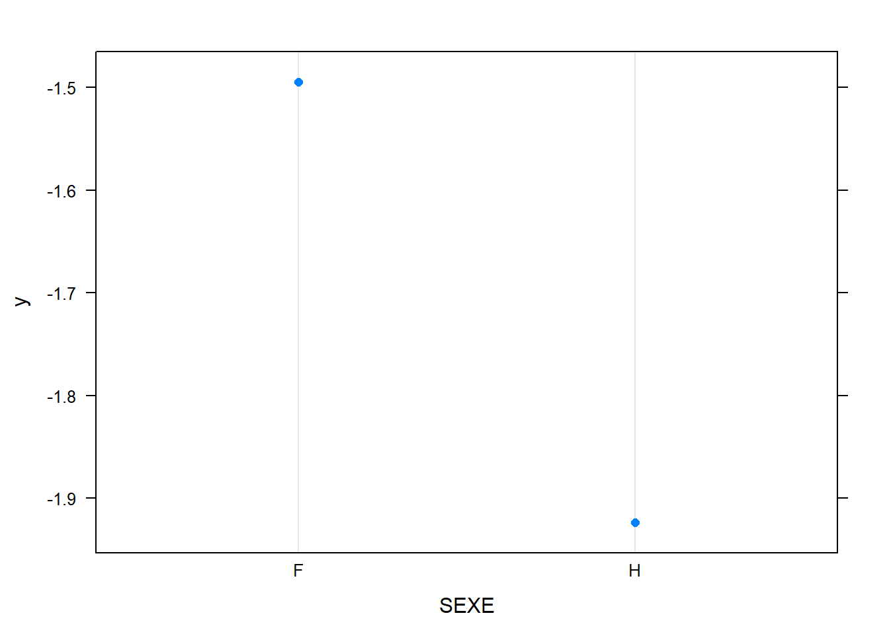

Modélisation du Churn sur un petit échantillon par Gradient Boosting
Philéas Condemine
17/03/2021
Chargement des packages
library(data.table)
library(gbm)
library(caret)
library(dplyr)
library(MLmetrics)
library(plotly)
library(pdp)Lecture des données et consolidation
customers = fread("data/customers.csv",encoding = "UTF-8")
indicators = fread("data/indicators.csv",encoding = "UTF-8")
uniqueN(indicators$ID_CLIENT)#On a 9950 individus avec 1 individu par ligne.## [1] 9950uniqueN(customers$ID_CLIENT)## [1] 9950dt = merge(customers,indicators,by="ID_CLIENT")
rm(customers,indicators)
dt = dt[,-c("ID_CLIENT","NOM")]
DT::datatable(head(dt,100)%>%sapply(sample))#on permute les données par colonne parce que la diffusion n'est pas autorisée. Ainsi on peut se faire une idée du contenu des colonnes sans révéler les données sous-jacentes.Data-prep basique
dt[,DATE_ENTREE:=as.Date(DATE_ENTREE)]
{ggplot(data=dt)+geom_bar(aes(x=year(DATE_ENTREE)))}%>%ggplotlydt[,age_produit:=as.numeric(Sys.Date() - DATE_ENTREE)]
dt = dt[,-c("DATE_ENTREE")]
dt[,id:=1:nrow(dt)]
dt[,group:=sample(1:10,replace=T,nrow(dt))]
dt[,CHURN:=ifelse(CHURN=="Yes",1,0)]
dt = dt%>%mutate_if(is.character,factor)%>%data.table
#vars not needed in the model
useless = c("id","group")Anticipation : définition des variables ayant un effet monotone
On verra après avoir lancé le modèle, en affichant les courbes de dépendance partielle que l’effet salaire est faible et instable avec un risque d’overfitting, ça se passe mieux si on met une contrainte de croissance.
vars = names(dt)
vars = setdiff(vars,"CHURN")
vars = setdiff(vars,useless)
monotony = setNames(rep(0,length(vars)),vars)
monotony['SALAIRE']=1
monotony## PAYS SEXE AGE MEMBRE_ACTIF
## 0 0 0 0
## BALANCE NB_PRODUITS CARTE_CREDIT SALAIRE
## 0 0 0 1
## SCORE_CREDIT age_produit
## 0 0Fonction pour lancer le modèle sur un échantillon 90-10
run_model_one_fold_and_predict = function(my_group,params,monotony){
train = dt[!group %in% my_group]
test = dt[group %in% my_group]
model = gbm(data = train[,-useless,with=F],CHURN~.,
distribution = "bernoulli",
var.monotone = monotony,
n.trees = params['ntrees'],verbose = F,
train.fraction = .7,
interaction.depth = params["depth"],
n.minobsinnode = params["nobs_in_node"],
shrinkage = params['shrinkage']
)
best.iter <- suppressMessages({gbm.perf(model, method = "OOB",plot.it = F,oobag.curve = F,overlay = F)})
# print(as.numeric(best.iter))
pred = predict(model,test,type="response",n.trees = best.iter)
quantile(pred,0:10/10)
q80 = quantile(pred,.8)%>%unname
test$pred_prob = pred
test$pred_val = 1*(pred > q80)
test
}Fonction pour lancer 10 modèles et calculer les métriques
run_model_and_evaluate = function(params,monotony){
res = lapply(1:10,run_model_one_fold_and_predict,params=params,monotony=monotony)
res = rbindlist(res)
precision = Precision(y_pred = res$pred_val,y_true = res$CHURN)
acc = Accuracy(y_pred = res$pred_val,y_true = res$CHURN)
recall = Recall(y_pred = res$pred_val,y_true = res$CHURN)
auroc = MLmetrics::AUC(y_pred = res$pred_prob,y_true = res$CHURN)
c(params,"precision"=precision,"recall"=recall,"acc"=acc,"auroc"=auroc)
}Quelques jeux de paramètres
Sans contrainte de monotonie
monotony['SALAIRE']=0
params = c("depth"=1,"nobs_in_node"=20,"shrinkage"=.1,"ntrees"=200)
run_model_and_evaluate(params,monotony)## depth nobs_in_node shrinkage ntrees
## 1.0000000 20.0000000 0.1000000 200.0000000
## precision recall acc auroc
## 0.8953386 0.8994068 0.8361809 0.8446387Effet croissant du salaire
monotony['SALAIRE']=1
params = c("depth"=1,"nobs_in_node"=20,"shrinkage"=.1,"ntrees"=200)
run_model_and_evaluate(params,monotony)## depth nobs_in_node shrinkage ntrees
## 1.0000000 20.0000000 0.1000000 200.0000000
## precision recall acc auroc
## 0.8947104 0.8987757 0.8351759 0.8452293Profondeur 2
params = c("depth"=2,"nobs_in_node"=10,"shrinkage"=.1,"ntrees"=200)
run_model_and_evaluate(params,monotony)## depth nobs_in_node shrinkage ntrees
## 2.0000000 10.0000000 0.1000000 200.0000000
## precision recall acc auroc
## 0.9012439 0.9053389 0.8456281 0.8588759Profondeur 4
params = c("depth"=4,"nobs_in_node"=10,"shrinkage"=.1,"ntrees"=200)
run_model_and_evaluate(params,monotony)## depth nobs_in_node shrinkage ntrees
## 4.0000000 10.0000000 0.1000000 200.0000000
## precision recall acc auroc
## 0.9026260 0.9067272 0.8478392 0.8604187Interprétation
Modèle sur toutes les données
params = c("depth"=1,"nobs_in_node"=20,"shrinkage"=.1,"ntrees"=200)
useless = c("id","group")
train = dt[,-useless,with=F]
model = gbm(data = train,CHURN~.,
distribution = "bernoulli",
var.monotone = monotony,
n.trees = params['ntrees'],verbose = F,
train.fraction = .7,
interaction.depth = params["depth"],
n.minobsinnode = params["nobs_in_node"],
shrinkage = params['shrinkage']
)
best.iter <- suppressMessages({gbm.perf(model, method = "OOB",plot.it = F,oobag.curve = F,overlay = F)})
# best.iterImportance des variables
summary(model)
## var rel.inf
## AGE AGE 44.757422
## NB_PRODUITS NB_PRODUITS 31.918020
## MEMBRE_ACTIF MEMBRE_ACTIF 7.613653
## PAYS PAYS 7.406985
## SEXE SEXE 2.722466
## BALANCE BALANCE 1.958527
## SALAIRE SALAIRE 1.822279
## SCORE_CREDIT SCORE_CREDIT 1.546104
## age_produit age_produit 0.254543
## CARTE_CREDIT CARTE_CREDIT 0.000000Dépendances partielles
L’examen des dépendances partielles est utile pour évaluer visuellement des risques d’overfitting.
Variables numériques
pdply = function(varname){
pdp <- suppressWarnings({partial(model,varname,n.trees = best.iter,plot = T,plot.engine = "ggplot2")})
pdp %>% ggplotly
}
pdply("AGE")## Warning: Use of `object[[1L]]` is discouraged. Use
## `.data[[1L]]` instead.## Warning: Use of `object[["yhat"]]` is discouraged. Use
## `.data[["yhat"]]` instead.pdply("BALANCE")## Warning: Use of `object[[1L]]` is discouraged. Use
## `.data[[1L]]` instead.
## Warning: Use of `object[["yhat"]]` is discouraged. Use
## `.data[["yhat"]]` instead.pdply("SALAIRE")## Warning: Use of `object[[1L]]` is discouraged. Use
## `.data[[1L]]` instead.
## Warning: Use of `object[["yhat"]]` is discouraged. Use
## `.data[["yhat"]]` instead.pdply("SCORE_CREDIT")## Warning: Use of `object[[1L]]` is discouraged. Use
## `.data[[1L]]` instead.
## Warning: Use of `object[["yhat"]]` is discouraged. Use
## `.data[["yhat"]]` instead.pdply("age_produit")## Warning: Use of `object[[1L]]` is discouraged. Use
## `.data[[1L]]` instead.
## Warning: Use of `object[["yhat"]]` is discouraged. Use
## `.data[["yhat"]]` instead.Variables catégorielles ou binaires
plot.gbm(model,"PAYS")plot.gbm(model,"SEXE")
plot.gbm(model,"MEMBRE_ACTIF")plot.gbm(model,"NB_PRODUITS")plot.gbm(model,"CARTE_CREDIT")Conclusion
On arrive assez facilement à une AUC-ROC de 84%, en augmentant la profondeur on peut arriver à 86% mais on risque du sur-apprentissage et des modèles plus difficiles à interpréter.
On comprend assez bien pourquoi un modèle linéaire a du mal à bien prédire, l’effet marginal de l’âge sur le churn a une forme très lissée de parabole concave. L’ajout des variables age^2 et age^3 peut aider mais ne permet pas d’atteindre les mêmes perfs.